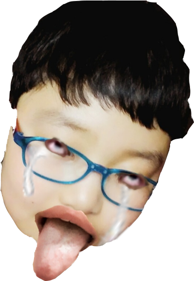

우주위키:대문
여러분이 가꾸어 나가는 우주의 지식
우주위키에 오신 것을 환영합니다!
우주위키는 누구나 기여할 수 있는 위키입니다.
검증되지 않았거나 편향된 내용이 있을 수 있습니다.
▲
이 위키는 위의 사진에 있는 우주라는 생물에 대해 연구하고 기록하기 위해 만들어진 위키이다.
이 생물은 아주 위험하여 특수 효과를 넣지 않은 원본 사진을 보면 눈이 멀어버린다.

우주위키에 처음 오셨나요?
먼저 규정과 도움말, 자주 하는 실수를 확인해 보세요.
우주위키 게시판
공지 · 그루터기 · 문의 · 신고 · 차단 소명 · 다중 계정 검사 · 토론 문의 · 개발 문의
권리침해 문의
문의 방법이 권리침해 도움말에 설명되어 있습니다.
운영진 지원
우주위키에서 운영진을 상시 모집하지 않습니다. 이곳에서 지원하실 수 없습니다.
나 집 옥상에서 벤치프레스 30kg 10번 했는데?
내 키가 너보다 클걸?
1. 개요
코드네임 UJU-9RAJANG2. 일명 '우주'라고 불리는 이 생명체는 2006년 어느 과학자가 우연히 발견하였다.
발견 당시에는 이런 모습이었는데 상당히 기괴한 모습인 것을 알 수 있다.
키는 50cm정도이며 몸무게는 500kg이다. 아주 위험한 케테르등급이며 현재는 MINSANG 재단에서 아주 엄격히 통제, 격리하고있다.
MINSANG 재단의 케테르 등급 중 위험도가 가장 높은 생물인 만큼 그 격리 수준도 엄청난데, 고강도 아다만티움 합금을 사용한 10M 두께의 격리실에서 감시하고 있다.
매일 몸에서 100L 이상의 분비물을 뿜어내기 때문에 청소가 필수적으로 필요한데, 죄인으로 이루어진 D등급을 이용해서 청소한다.
이것이 가능한 이유는 바로 우주가 온순해지는 때가 있기 때문인데, 그것은 바로 BL 만화를 갖다주는 것이다. BL 만화를 보면 잠깐동안 온순해 지지만, 지속시간은 1시간이 채 안되기 때문에 많은 인원을 투입해 한번에 청소를 한다고 한다.
사실 UJU-9RAJANG2은 원래 이름이 김우주인 평범한 인간이었다. 하지만 거짓말을 아주 많이 쳤는데, 말하는 것의 거의 50%가 구라일 정도로 구라를 많이 쳤다고 한다. 그러던 어느날 중학교 2학년이었을 때, 인간에게 허용되는 거짓말의 한계치를 넘어버려서 괴물이 되어 버렸다.
2. 성격
괴물이 되면서 이성이 사라졌다. 성격은 흉폭하고 무자비하다. 타협이 없으며 모든 생명체를 죽이려는 본능이 있어서 생명체가 감지되면 바로 공격을 한다.
그 예로 옛날에 과학자들이 우주가 BL 만화를 보며 온순해졌을때 진정제를 꼽고 대화를 시도하려고 했는데. 진정제 주사바늘이 피부에 닿기도 전에 폭발을 일으켜 격리실이 완전히 파괴되었었다.
3. 행적
유명한 행적은 인간이었을 시절, 친구들과 배틀그라운드 모바일 게임을 하다가 자신의 최다킬이 20킬을 넘는다는 개소리를 지껄였고, 결국 구라였던게 밝혀져 망신을 당했다.
또, 우주의 친구였던 마민성과 정상비가 한국의 안양천의 양화대교에서 벤치프레스를 각각 30kg, 40kg을 들었다고 하자, 몇번 들었냐고 물으며 자신은 30kg으로 10번을 한다고 하였다.
하지만 이 역시 구라로 밝혀졌는데, 이유는 마민성과 정상비가 같이 가서 해보자고 할 줄 몰랐던 김우주가 가기 전에 사실 20kg이었다고 구라를 쳤던것을 실토하여 놀림감이 되었다.
참고로 후일 마민성과 정상비가 양천공원에 가서 우연히 20kg 벤치프레스가 있어서 해봤는데, 헛웃음이 나올 정도의 무게라서 어이가 없었다고 한다.
4. 능력
인간 50명을 1초만에 죽여버릴 정도의 전투력을 가지고 있고, 그 어떤 현대의 병기로도 죽이는 것이 불가능하다.
하지만 위에서도 언급했듯 BL 만화가 약점이긴 한데, 이때도 절대 죽일 수가 없기 때문에 격리실에 격리 하는것이 고작이다.
2100년 현재, 핵폭탄은 어린아이도 가지고 놀 만한 장난감이지만 2006년, 발견되어 사람들이 학살 당해서 지구 인구가 10억이 되었을 때, 최후의 보루로 아껴뒀던 핵폭탄을 발사했지만 미동도 없었다고 한다.
5. 변종
2006년 발사했던 핵폭탄을 맞은 뒤, 우주는 방사능에 의해 엄청난 수의 돌연변이들이 생기며 여러 개체로 나뉘어졌다. 새로 생긴 돌연변이들은 우주 본체보다 전부 약하지만 우주와 비슷하게 강한 개체도 있다.
이 변종들은 그렇게 강하지도 않고 불사도 아니지만 문제는 '번식'을 한다는 것이다. 이 때문에 강한 변종들은 멸종 하지 않고 아직도 숨어 살고 있다.
수가 너무 많아 이 문서에는 다 기록할 수 없으므로 우주의 변종을 기록한 외부 링크로 대체하겠다.